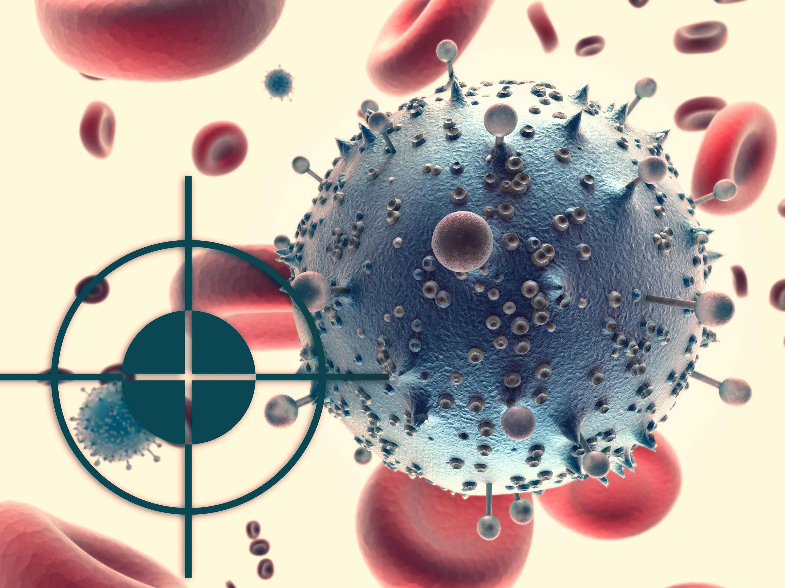

Таргетная терапия

Таргетная (от англ. target - цель, мишень) терапия представляет собой одно из ведущих направлений современной противоопухолевой терапии, блокирующих конкретные механизмы действия определенных молекул, которые вызывают развитие опухоли.
 Что такое таргетная терапия
Что такое таргетная терапия
Направление появилось в 90-е годы, его значимое отличие от химиотерапии в том, что последняя уничтожает одновременно и раковые, и здоровые клетки организма. Опухолевые клетки отличаются от здоровых тем, что бесконтрольно делятся. А цитостатики (препараты химиотерапии) уничтожают все, что активно размножается, без разбора — «неправильная» или «правильная» это клетка. Как следствие — у пациента начинают проявляться побочные эффекты терапии, например, проблемы с волосами и ногтями, ведь именно в этих частях тела происходит постоянное активное обновление клеток. Кроме того, снижаются показатели крови, так как кроветворение также «приостанавливается».
Принцип действия таргетной терапии — это воздействие на молекулярно-генетические механизмы в раковых клетках, которые поддерживают в них процесс размножения и выживания. Препараты таргетной терапии блокируют подобные отклонения в клетке.
Большая часть лекарств делится на препараты, которые состоят:- из малых молекул, частиц, которые нарушают работу сигналов внутри клетки;
- из моноклональных антител, белковых молекул, которые умеют распознавать и прикрепляться к раковым клеткам.
Главное достоинство направления — в зависимости от типа опухоли оно может быть эффективнее, чем химио- и лучевая терапия. При этом количество побочных эффектов бывает меньше по сравнению с традиционными методами.
Таргетные лекарства довольно специфичны и каждое из них разрабатывается под конкретный мутировавший ген раковой клетки определенного вида опухоли. Поэтому до таргетного лечения обязательно проведение генетического исследования материала, который взят на биопсию.
На сегодняшний день уже существуют препараты, направленные на борьбу с раком молочной железы, лимфомы, рака предстательной железы, меланомы и т. п. В силу своей специфики и целевого попадания на раковую клетку-мишень таргетные препараты более эффективны для лечения опухолей, чем например, классические противоопухолевые. При этом менее вредны для нормальных клеток, не обладающих характеристиками опухолевых.
Таргетная терапия считается перспективным направлением, продолжающим активно развиваться.